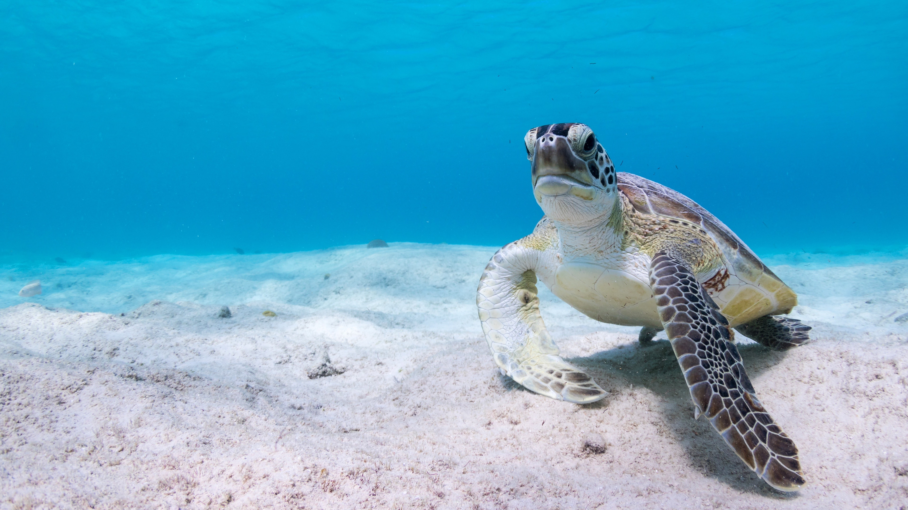
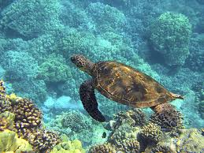

What can you do to save sea turtles?
Join a sea turtle conservations!
Support actions that help sea turtles.
Choose sunscreen carefully.
Chemicals in some types of sunscreen can damage coral reefs and pollute turtle habitat.
Avoid any sunscreen with "oxybenzone" and look for brands labeled as "Reef Friendly" and
avoid sprays that can
pollute the sand where turtles nest.
What Can You Do to Protect Sea Turtle Habitat?
Reduce marine debris that may entangle or be accidentally eaten by sea turtles.
Participate in coastal clean-ups and reduce plastic use to keep our beaches and ocean clean.
Carry reusable water bottles and shopping bags. Refrain from releasing balloons, they'll
likely end up in the ocean where sea turtles can mistake them for food and consume them.
Do not disturb nesting turtles, nests, or hatchlings. Attend organized sea turtle
watches that know how to safely observe nesting sea turtles.
Turtles dig the dark! Sea turtles need dark beaches for nesting and for navigating their
way to the ocean.
